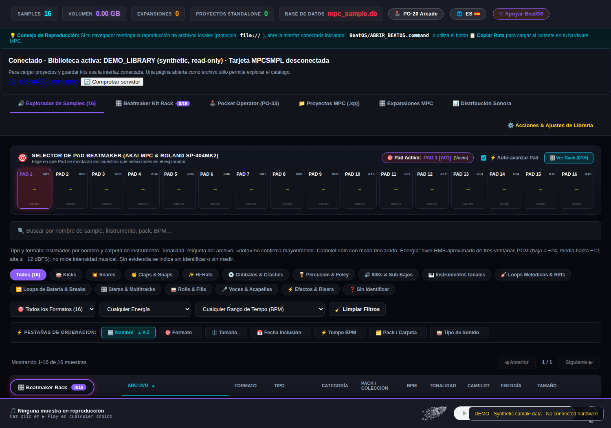
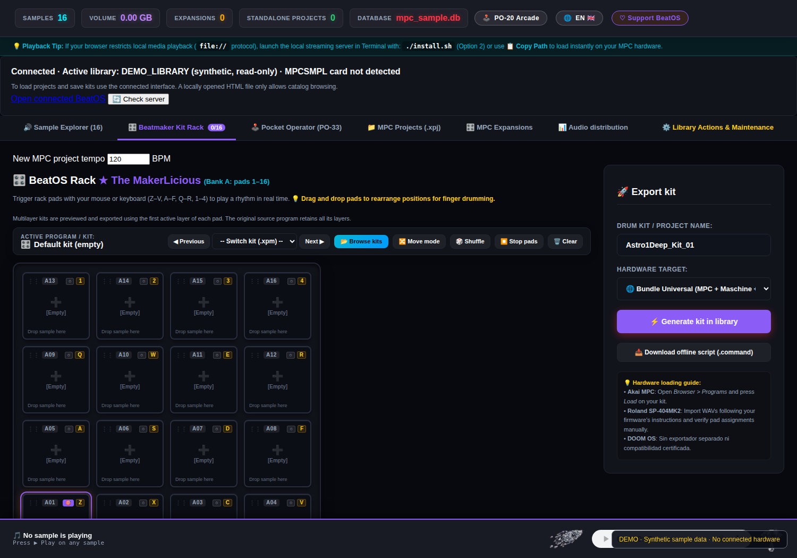

Tus samples.
Tu hardware. Tus kits.
BeatOS — The MakerLicious es un explorador de bibliotecas de samples y estación de trabajo de 16 pads para beatmakers. Busca y preescucha sonidos, inspecciona proyectos MPC compatibles y prepara kits de audio para samplers físicos.
Así se ve BeatOS


Funciones para sampling y beatmaking
Explorador de samples
Bibliotecas locales, búsqueda, escucha, pistas de BPM y tonalidad a partir de nombres, y energía RMS estimada en ventanas.
Proyectos Akai MPC
Inspección de XPJ y programas XPM compatibles, detección de referencias ausentes y carga de una copia de 16 pads.
Rack universal de 16 pads
Escucha, organización de pads, controles individuales y exportación por formato de destino.
Flujos por sampler
Akai MPC, Maschine (WAV y JSON), Roland SP-404MKII / SP-404A/SX, PO-33 / PO-133 (reel de audio) y EP-133 (WAV/ZIP).
Interfaz ES / EN
Controles y manuales bilingües con pruebas automatizadas. La localización absoluta de errores excepcionales continúa su auditoría.
Local y verificable
Python, SQLite y servidor HTTP local, sin necesidad de subir a la nube tus samples para las funciones básicas.
Cómo comenzar
- Descarga el ZIP adjunto a una release y comprueba su SHA-256.
- Instala Python 3.11 o posterior; FFmpeg es necesario para determinadas conversiones.
- Consulta la guía de instalación y la matriz de compatibilidad.
- Inicia BeatOS, indexa tu biblioteca, selecciona ES/EN y construye tu kit de 16 pads.